| 日付 | 2025年2月9日（日） |
|---|---|
| 山域 | 奥秩父 |
| メンバー | 単独 |
| 山行形態 | 日帰り |
| アクセス | 車、バス、電車 |
| ルート (Map) | 大蔵経寺山駐車場 (8:23) - (9:16) 大蔵経寺山 - (9:59) 深草山 - (10:35) 鹿穴 - (11:12) 深草観音 (11:29) - (12:11) 要害山 - (12:35) 要害山登山口 - (13:10) 武田神社 - (13:23) 武田神社バス停 |
山梨県にある大蔵経寺山と要害山。
どちらも短い山だが、2つの山をつなぐとそこそこのコースになる。
登山口が全く別の場所にあるので、その間を電車とバスで移動するプランにする。
大蔵経寺山の登山者用駐車場に車を停める。標高300m。
ここから要害山登山口に移動する計画だったのだが、想定より早く着いて
電車とバスの時間が合わないため、計画とは逆ルートを歩くことにする。
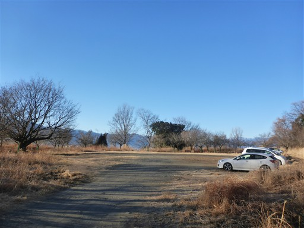
駐車場の側に登山口があるが、こちらのコースではなく直登コースを歩きたかったため、こちらはパス。
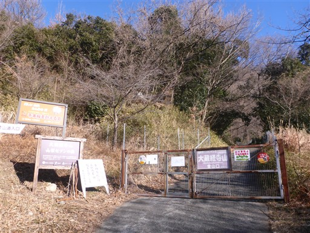
駐車場の裏から一旦柵を出て、別の登山口に移動して再び柵に入る。
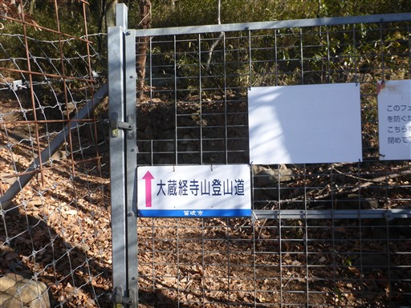
立派な赤い鳥居が立っている。
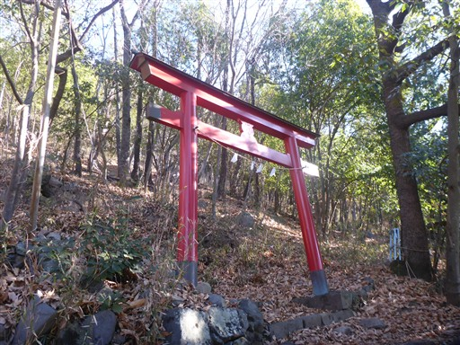
神社に続く長い石段。
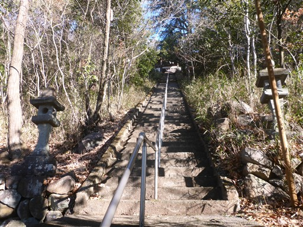
石段を登った先にある山神宮本殿。
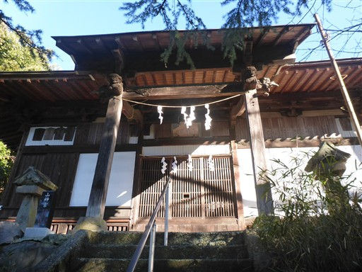
ここから先は岩が散在する登山道になる。
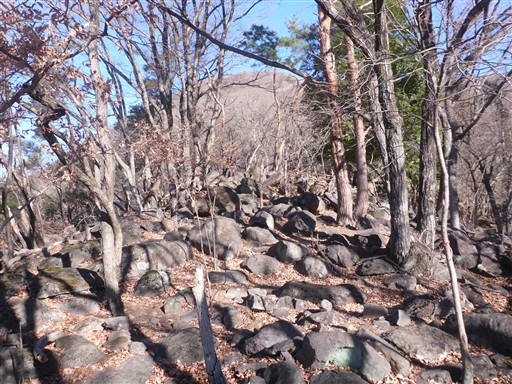
展望が広がる場所に出てくる。甲府市街と、その奥に見えるのは南アルプスの悪沢岳だ。
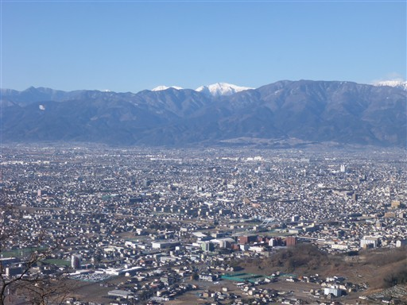
もう少し目を右に振ると、農鳥岳～間ノ岳が見える。

落ち葉が積もって歩きにくい。
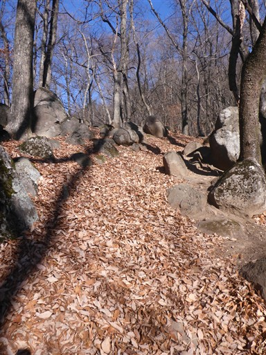
大蔵経寺山の山頂に到着。標高716m。
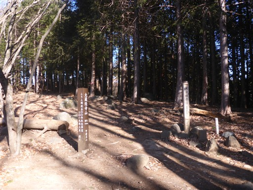
針葉樹と広葉樹の境目になっている冴えない山頂。展望は広がらない。
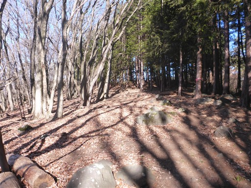
ここから奥に向かって縦走路を進む。

ここは今年1月18日に山火事があり、あちらこちらで木が焼け焦げている。
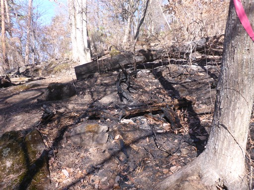
枯木は黒焦げだが、その奥の生木は無傷。
生木は燃えにくいというのは本当だ。
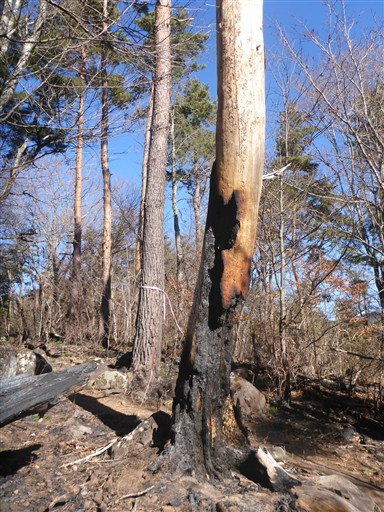
稜線の途中で再び展望ポイントがある。
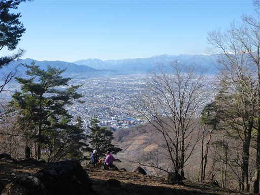
焼け焦げたすぐ隣に、山火事注意の標識。
あちらこちらで山火事注意の標識を見る。なぜかこの辺りの山は山火事が多い。
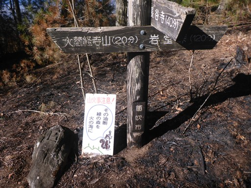
深草山に到着。標高906m。
大蔵経寺山より山頂らしい場所だが、ここも展望は広がらない。
私製の同じような山頂標識がたくさんあるのが無粋だ。
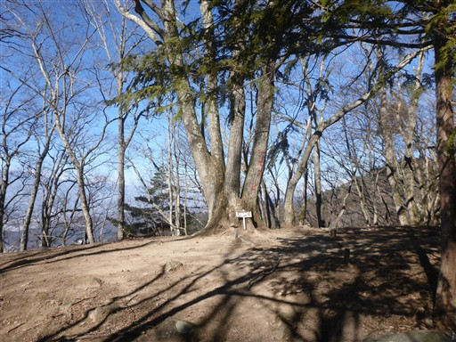
いったいこれは何だろう？何個か見かけたが…
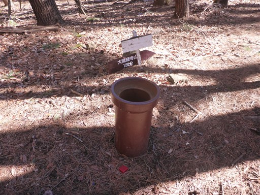
バラバラになった標識。この辺りで尾根道と巻道に分かれるが、尾根道を選択。
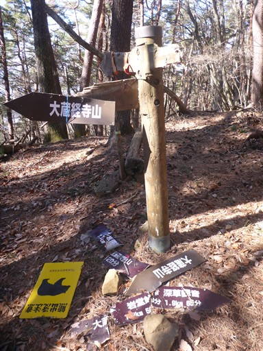
鹿穴という名の山頂に到着。標高990m。
冴えない山頂だが、本日の最高峰だ。
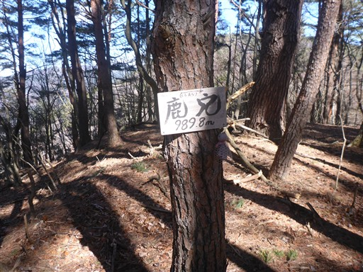
巻道と合流したら、次の名もなきピークは無視して巻道を行く。
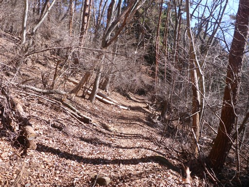
マツダランプの古い標識。今でもたまに山で見かける。
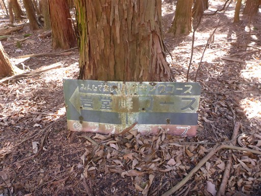
日影は少し雪が残っている。
とは言え、最も雪がある場所でもこの程度で、ほとんど雪はない。
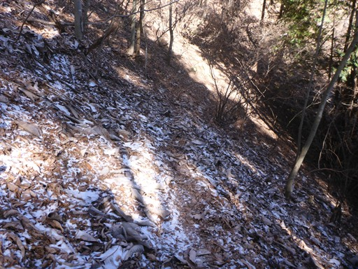
尾根道と巻道の合流地点に、鬼山という標識が書かれている。
無視したピークは地図には載っていないが、鬼山という名が付けられているようだ。
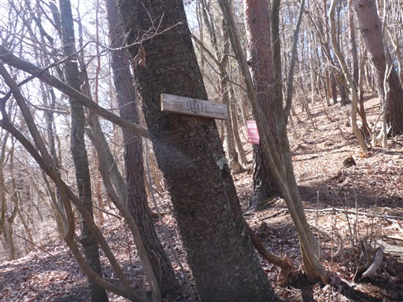
すぐその先の岩堂峠に到着。
かわいらしいてるてる坊主のようなものが掛かっている。
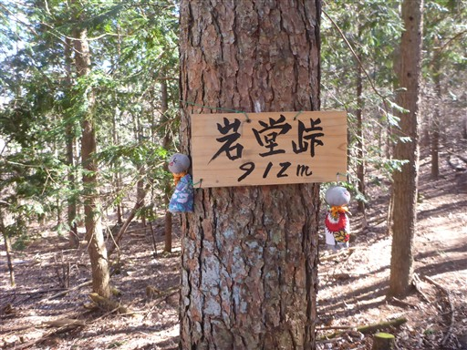
ここから沢沿いを降る道になる。
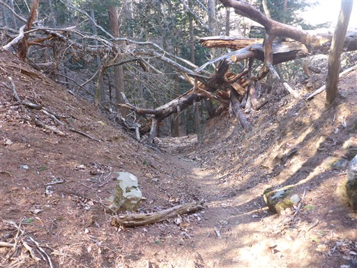
突然、石垣が現れる。何に使われていたものだろう？
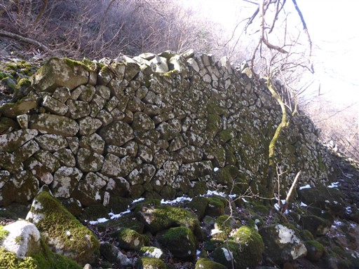
この辺りは地形が急峻で岩壁が見られる。
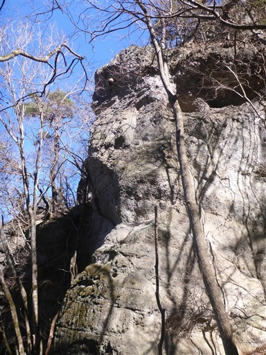
登山道から外れた岩壁の中にお堂があるようなので寄り道してみる。
解説板によると深草観音と呼ばれているらしく、33年に1度しか開帳されないらしい。
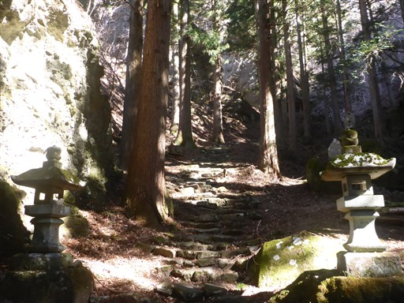
巨大な梯子があるが、登ってはいけないようだ。
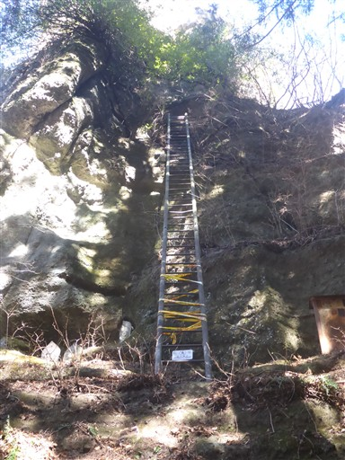
岩壁の足元にたくさんの仏像が祀られている。
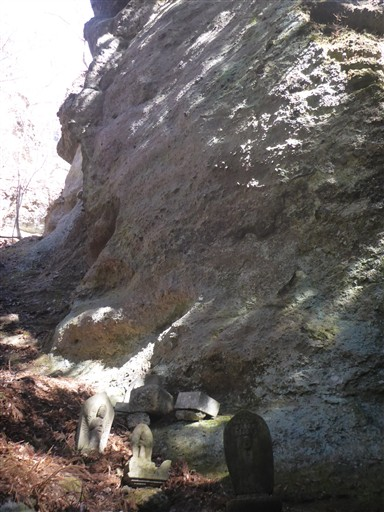
岩を削ってつくられた階段を登る。
傾斜が急なので鎖が設置されている。
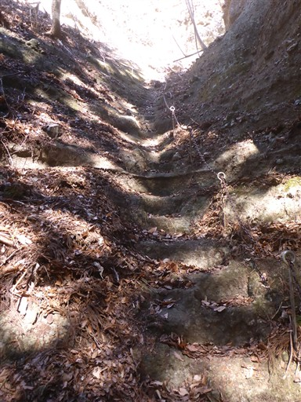
高度感のある岩棚の道を進む。
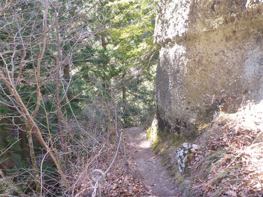
その行き止まりに小さな穴があり、中に入れるようになっている。
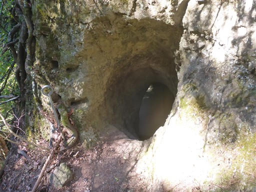
御座が敷かれている。一瞬、靴を脱ぐのかと思ったが、かなり汚れているので土足で大丈夫だろう。
左手に大きな穴が開いている。
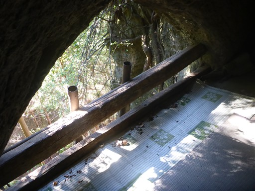
穴は先ほど見た梯子と繋がっている。
こちらが正面入口で、梯子が危険なので脇から入れるようになっているのだろう。
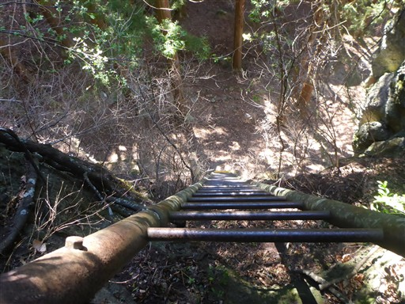
穴の奥はこのような感じ。かなり狭いが鈴やロウソクなど一通りのものが揃っている。
こんな場所がこの地にあるなんて全然知らなかった。
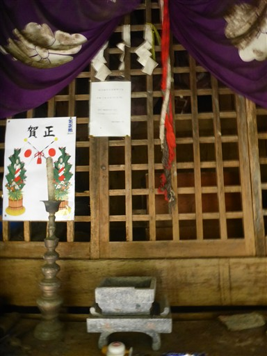
側面につけられた小さな穴。今はこちらが出入口だ。
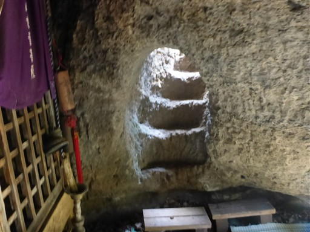
穴の外に出る。ふと見ると、岩壁の中にも仏像が置かれているのが見える。
あんな崖の真ん中にどうやって安置したのだろう？

改めて梯子の基部に来てみる。
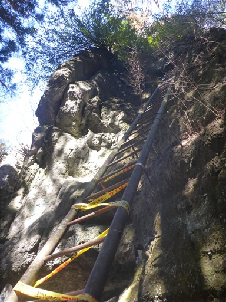
なんと昭和三年と記載されている。さすがに古すぎる。登降禁止なのは当然だ。
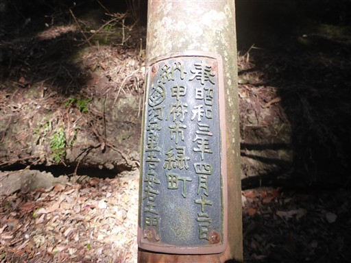
手水舎。中の水は完全に凍り付いている。
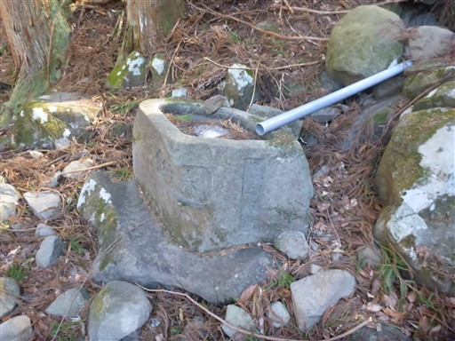
深草観音を後にし、沢沿いの道をどんどん降っていく。
水が染み出しているところが凍り付いている。側の沢も凍っている。
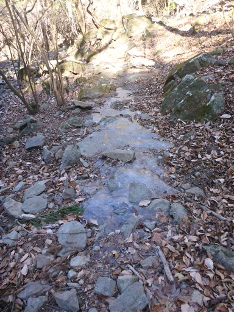
要害山との分岐点に到着。ここから要害山に登り返す。
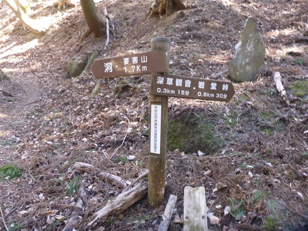
明るい尾根道。ほとんど平坦な登山道だ。
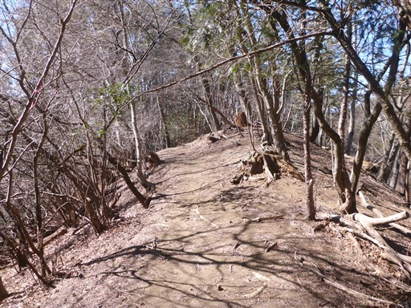
門跡。要害山は武田氏の要害山城があった場所で、史跡が残っている。
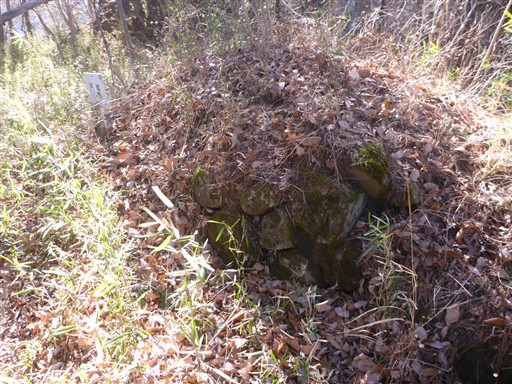
竪堀跡。尾根の両端を削って、通り道を狭くしている。
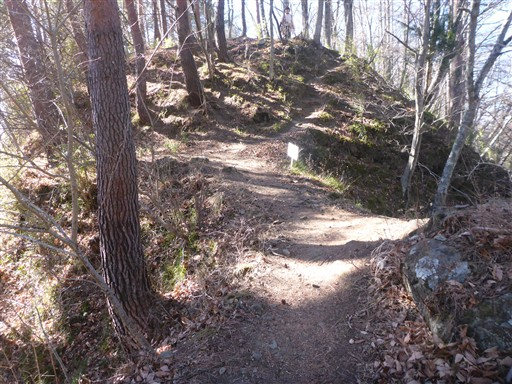
堀切跡。
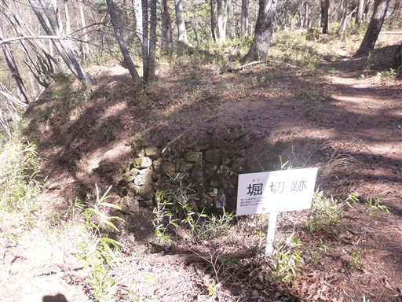
主郭部に到着。ここに城があったようだ。
70×20mのかなり広い敷地だ。
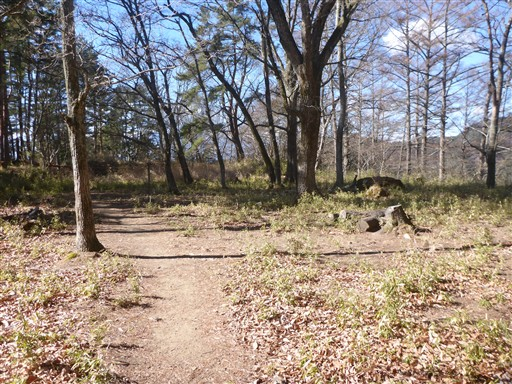
主郭部の端の方に要害山の山頂標識がある。標高780m。
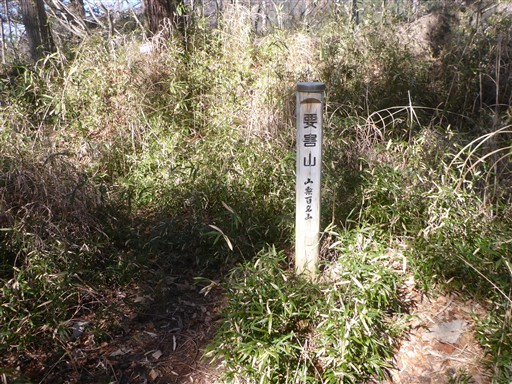
武田信玄公誕生之地の石碑。
この城は信玄の父・武田信虎が築城したようだ。
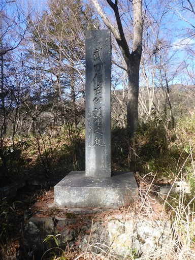
下山道にも、あちらこちらに史跡がある。こちらは曲輪。
山腹を造成して造られた平坦地だ。
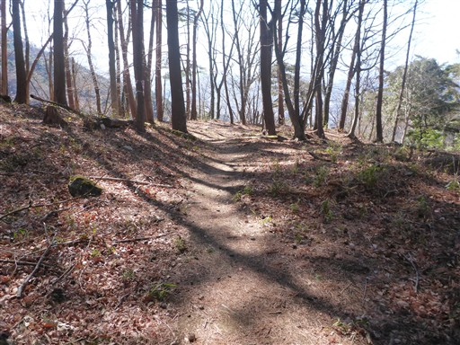
不動明王像。
甲府の街が見下ろせるように正面が切り開かれている。
あちらこちらで幹同士が結合しているケヤキの木。
やまなしの森林100選、要害山のアカマツ林。
確かにこの辺りは松の木が多い。
無事下山。登山口には要害山の立派な標識が立っている。
ここから40分ほど車道歩き。
振り返ると丸い頭の要害山が良く見える。
バス停はあるのだが、1日3本。
往路・復路で、このバスを使えないか検討したが、良い時間の便がなかった。
市街地から南アルプスの山々が見渡せる。良い景色の街だ。
武田神社に到着。バスの時間まで少し余裕があるので寄り道することにする。
武田神社拝殿。武田信玄を祭神としている。
1919年創建でかなり新しい神社だ。
甲陽武能殿。
参道は広くてきれいだ。
手水舎。武田家の家紋の武田菱の形をしている。
鳥居を潜って境内の外に出る。朱色の橋が架かっている。
振り返って武田神社の入口を眺める。
かつては武田家の居城だったため、堀に囲まれている。
神社前にある武田神社バス停に移動。標高340m。
ここまで来るとバスの本数は30分に1本になる。
バス、電車と乗り継いで石和温泉駅から駐車場に戻る。
山の名前の元となった大蔵経寺が眼下に見える。
深草観音や要害山城など歴史を感じられた山行だった。